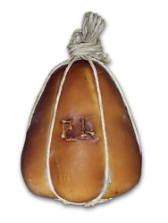

Radici vicane
Il mestiere di famiglia viene tramandato sulle colline di Vico Equense.
La specialità del caseificio
Il Caseificio Luigi Parlato è rinomato per il Provolone del Monaco. Una pagina dedicata può mettere a fuoco il prodotto e rendere immediati i contatti, lasciando che sia il produttore a raccontare i dettagli tecnici.

Lavorazione · tradizione · territorio
La pagina ufficiale lega il Provolone del Monaco alla tradizione della famiglia Parlato, sia nella lavorazione sia nella stagionatura. La produzione è descritta come basata sulla qualità del solo latte italiano.
Nel progetto definitivo la scheda potrebbe approfondire ingredienti, caratteristiche, formati e disponibilità solo con i dati approvati dal caseificio.
Non è un negozio online: per informazioni e acquisti la proposta porta alla telefonata o alla visita in sede.
Dalla materia prima alla visita
Il mestiere di famiglia viene tramandato sulle colline di Vico Equense.
Il caseificio richiama le proprie tecniche tradizionali di lavorazione e stagionatura.
Telefono e indirizzo sono visibili accanto alla presentazione della specialità.